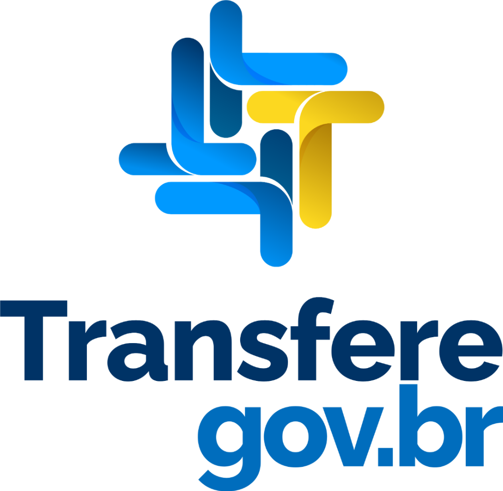

Desenvolvimento do Novo Site Institucional — Moriá Consultoria e Projetos
Criação de plataforma digital moderna, rápida e institucionalmente impecável, projetada para consolidar a autoridade da Moriá perante institutos, associações, fundações (OSCs) e órgãos governamentais, destacando o ecossistema completo de 8 soluções técnicas e facilitando a captação de novas parcerias estratégicas.
01. Módulos & Entregáveis do Projeto
O projeto contempla o ciclo completo de planejamento, arquitetura da informação, design de interface (UI/UX), desenvolvimento frontend com código limpo e publicação em infraestrutura de alto desempenho.
| # | Módulo / Entregável | Funcionalidades & Detalhamento Técnico |
|---|---|---|
| 01 | Hero & Posicionamento de Autoridade | Abertura de alto impacto comunicando a proposta de valor: "Sua parceira estratégica na gestão de projetos e no fortalecimento do Terceiro Setor". Badges de conformidade com o Marco Regulatório (MROSC) e legislação da Administração Pública, transmitindo credibilidade técnica imediata. |
| 02 | Apresentação Institucional & Diferenciais | Seção corporativa contextualizando o suporte especializado a institutos, associações e OSCs. Foco em inteligência técnica, planejamento e compliance com normas ministeriais, portarias específicas e rigor na prestação de contas. |
| 03 | Vitrine das 8 Soluções Estratégicas | Apresentação modular e hierarquizada das 8 frentes de serviço da Moriá: Transferegov.br/CONVERJ, Fundo Nacional de Saúde (FNS), Projetos e Planos de Trabalho, Planilhas Orçamentárias, Monitoramento e Avaliação, Pesquisas e Análise de Dados, Prestação de Contas e Gestão/Consultoria Institucional. |
| 04 | Governança: Missão, Visão e Valores | Estruturação de bloco visual elegante destacando a Missão (fortalecimento do Terceiro Setor), a Visão de referência técnica e a régua de 8 Valores fundamentais (ética, transparência, excelência técnica, comprometimento, responsabilidade social, inovação, confiança e legalidade). |
| 05 | Área Discreta de Clientes & Parceiros | Seção sóbria em grid minimalista exibindo a carteira de organizações atendidas e parceiros institucionais. Formato elegante que atesta a solidez de mercado da Moriá sem poluição visual ou excessos. |
| 06 | Canal de Conversão & Diagnóstico Rápido | Call-to-Action inteligente para captação de demandas de consultoria e agendamento de reuniões, com gatilho direto para o WhatsApp oficial com mensagem pré-formatada por tipo de necessidade. |
| 07 | Engenharia Moderna, SEO & Performance | Arquitetura de alta performance com Next.js e Supabase, notas máximas no Google PageSpeed (Core Web Vitals), indexação para Google Search (Schema.org / JSON-LD) e publicação contínua na Vercel com SSL ativo. |
1. Hero & Posicionamento de Autoridade
PrincipalAbertura de impacto: proposta de valor da Moriá, foco em parcerias públicas, MROSC e conformidade com Ministérios.
2. Apresentação Institucional
InstitucionalHistórico, suporte a OSCs e o diferencial de unir planejamento, visão estratégica e segurança jurídica.
3. As 8 Soluções Estratégicas
SoluçõesCards detalhados para Transferegov/CONVERJ, FNS, Planos de Trabalho, Orçamentos, Monitoramento, Pesquisas, Prestação de Contas e Gestão Institucional.
4. Missão, Visão e Valores
GovernançaApresentação visual da cultura, ética, conformidade técnica e integridade operacional da Moriá.
5. Área Discreta de Clientes
AutoridadeListagem discreta e elegante de organizações e instituições atendidas, reforçando prova social qualificada.
6. Canal de Atendimento & WhatsApp
ConversãoBotões de contato direto para solicitação de diagnóstico e atendimento consultivo imediato via WhatsApp.
7. Engenharia, SEO & Otimização
InfraestruturaCarregamento ultra-rápido com Next.js na Vercel, Supabase, indexação no Google e total responsividade.
Estrutura do Hub de Soluções no Site
O novo portal organizará as soluções em cartões modulares e limpos, permitindo leitura objetiva por gestores públicos e diretores de OSCs:
Transferegov.br e CONVERJ
Suporte integral à operacionalização dos sistemas federais e estaduais, cadastramento de propostas e acompanhamento técnico rigoroso de parcerias públicas.
Fundo Nacional de Saúde (FNS)
Apoio especializado à elaboração, adequação às portarias do Ministério da Saúde, cadastramento e operacionalização de propostas na área da saúde pública.
Projetos e Planos de Trabalho
Estruturação técnica e metodológica de propostas, definição de metas físicas mensuráveis, cronogramas de desembolso e planos de execução detalhados.
Planilhas Orçamentárias
Composição analítica de custos unitários, elaboração de memórias de cálculo, cotações de referência de mercado e planejamento orçamentário em conformidade legal.
Monitoramento e Avaliação
Acompanhamento sistemático da execução de metas, análise de indicadores qualitativos e quantitativos, verificação de cumprimento do cronograma e gestão de resultados.
Pesquisas e Análise de Dados
Condução de pesquisas de satisfação dos beneficiários, estudos de opinião pública, diagnósticos territoriais e relatórios de avaliação de impacto social.
Prestação de Contas
Organização documental prévia, elaboração de relatórios técnicos de cumprimento do objeto, conciliação e sistematização de evidências para aprovação nos órgãos de controle.
Gestão e Consultoria Institucional
Análise de editais de chamamento público, organização e padronização de processos de governança e fortalecimento contínuo da capacidade gestora das OSCs.
Módulo de Governança Institucional
Seção estruturada para transmitir a filosofia e solidez ética da Moriá aos parceiros e financiadores:
Fortalecer o Terceiro Setor
Oferecer consultoria especializada e soluções estratégicas para o fortalecimento do Terceiro Setor, auxiliando institutos, associações e Organizações da Sociedade Civil (OSCs) na estruturação, gestão, execução e avaliação de projetos, com foco na eficiência, na transparência e na geração de impacto social.
Referência em Gestão e Impacto
Ser referência em consultoria e gestão de projetos para o Terceiro Setor, reconhecida pela excelência técnica, pela confiança nas relações com os clientes e pela contribuição para o fortalecimento institucional e a transformação social.
Pilares de Conformidade
Área Discreta de Clientes & Instituições Atendidas
Prova Social SóbriaPara preservar o perfil corporativo da consultoria, a exibição de clientes adota um layout minimalista e confidencial, conferindo autoridade instantânea:
02. Metodologia & Fluxo de Execução
Processo ágil e enxuto em 4 etapas sequenciais para garantir entrega em prazo recorde com qualidade máxima:
Planejamento, Textos & Arquitetura
Validação final da redação institucional da Moriá, organização dos detalhes das 8 soluções e consolidação da lista discreta de clientes.
Desenvolvimento Frontend em Next.js & UI
Construção da interface com TailwindCSS e componentes otimizados, aplicando a identidade da marca Moriá (azul marinho e dourado) e logotipo do Transferegov.br.
Integração Supabase, WhatsApp & SEO
Configuração de infraestrutura moderna com Supabase, canal direto para o WhatsApp e metatags para indexação no Google.
Deploy na Vercel & Apontamento de Domínio
Publicação em alta disponibilidade na Vercel com CDN global, ativação de SSL automático e entrega final pronta para uso.
03. Stack de Tecnologia
04. Etapas de Desenvolvimento & Cronograma
| Etapa de Entrega | Escopo Técnico Principal | Prazo Estimado |
|---|---|---|
| 1. Planejamento & Arquitetura | Consolidação dos textos, estrutura visual e definição das seções. | 1 dia útil |
| 2. Frontend & Vitrine das 8 Soluções | Codificação em Next.js e TailwindCSS de todas as seções e soluções. | 2 dias úteis |
| 3. Governança, Clientes & WhatsApp | Área discreta de clientes, bloco de governança e canal de WhatsApp. | 1 dia útil |
| 4. Homologação & Deploy Vercel | Testes responsivos, configuração de DNS no domínio oficial e publicação na Vercel. | 1 dia útil |
Etapa 1: Planejamento
1 dia útilConsolidação do conteúdo institucional e estrutura do site.
Etapa 2: Frontend & 8 Soluções
2 dias úteisDesenvolvimento em Next.js das seções institucionais e do hub de soluções.
Etapa 3: Clientes & WhatsApp
1 dia útilÁrea de clientes, governança institucional e botões de contato direto.
Etapa 4: Deploy na Vercel
1 dia útilPublicação com SSL automático e apontamento do domínio oficial.
Prazo total estimado para entrega: 5 dias úteis.
05. Investimento & Condições
Design exclusivo, componentes modernos e total responsividade mobile.
Transferegov, FNS, MROSC, Orçamentos, Prestação de Contas e Missão/Valores.
Prova social corporativa sóbria e canal de captação ágil de novas parcerias.
Hospedagem global de alta velocidade, SSL automático e suporte contínuo vitalício.
06. Condições Gerais & Garantias
Forma de Pagamento
• Valor Total: R$ 1.000,00.
• Condição: 2 parcelas de R$ 500,00 — sendo R$ 500,00 na entrada e R$ 500,00 na entrega.
Garantia & Suporte Técnico
VitalícioGarantia e suporte técnico contínuo vitalício para manter a plataforma sempre estável, segura e plenamente operacional.
Propriedade Intelectual & Liberdade Total
Transferência de 100% dos direitos autorais, código-fonte e arquivos para a Moriá Consultoria e Projetos Ltda. após a quitação, sem qualquer amarração de mensalidades proprietárias.